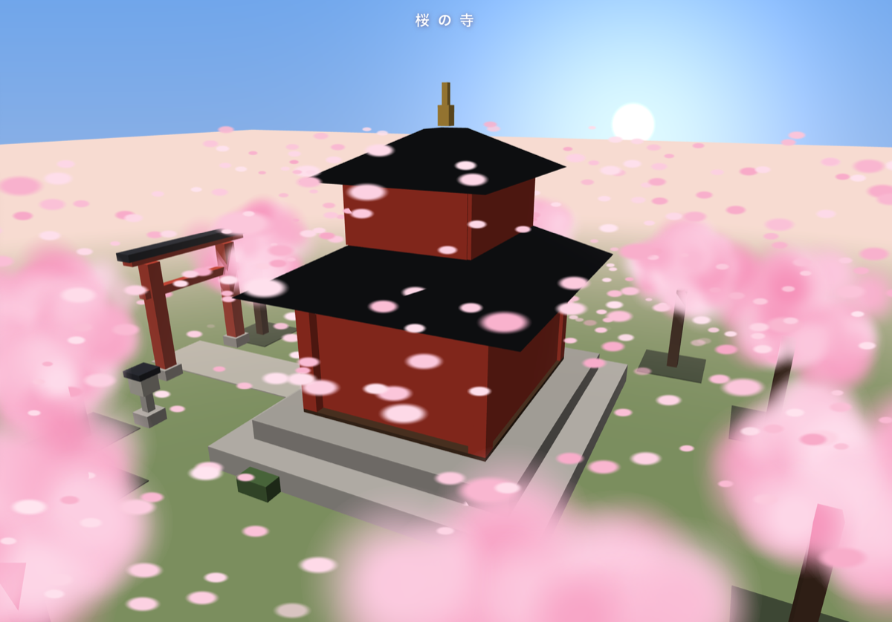
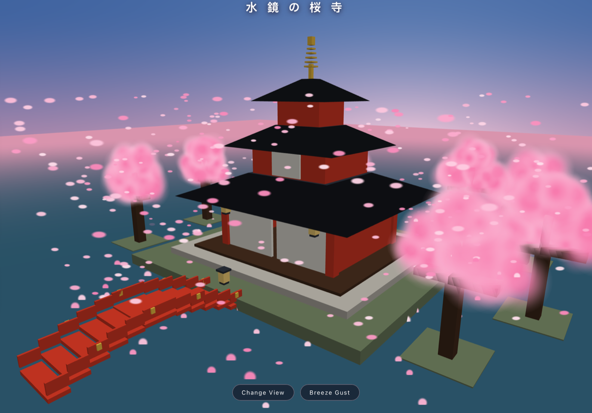

95% Done, 100% Blue Sky
The Local AI saga: 1. Little Gemma vs Big Desk · 2. Three Different OCRs · 3. Friendly Competition · 4. 95% Done, 100% Blue Sky
I asked a 13-gigabyte model on my laptop to build me a Japanese temple. It designed something beautiful, and then spent all evening failing to show it to me. It still has never seen it.
Let's try something harder
Last week I made the small AIs on my laptop draw an aquarium, and one of them finally passed. An aquarium is a flat drawing that moves — fish, corals, a bit of light. Good enough as an entrance exam.
So I wrote a harder one. A temple, in three dimensions, that you can turn around and look at from any side. Cherry blossom trees swaying in the wind. Working on an iPad.
And one extra rule, which turned out to be the downfall: no libraries.
A library is somebody else's prewritten helper code — the scaffolding almost every programmer stands on. Banning it means doing every piece of the 3D bookkeeping yourself.
So I asked:
Build a single page HTML file with the Japanese temple, surrounded by
cherry blossom trees, swinging in the wind as a 3-D scene without using
any libraries, and it must render even in Safari on the iPad
It thought deep and took twenty-five minutes. For seventeen of them nothing appeared at all, while it worked out how to build a temple before building one.
Then four hundred lines of code came out.
I opened it.
Blue. Just blue.
An empty blue screen, with the title text I had asked for floating uselessly at the top. No temple, no trees, no error, no complaint. Just a browser calmly showing me nothing at all.
There was nothing to work with. A page that fails usually tells you something — a red line, a warning, half a drawing. This told me nothing, and I had four hundred lines of unfamiliar code and no idea which one of them was lying.
I gave the small model a chance to fix its own mistakes first. It came back with solutions that didn't fix the problem.
Then I took it to a big model — one of the hosted ones, smarter, less compressed. Here's my code. Here's the fix that didn't fix it. How do I fix this?
To debug something you have to be smarter than who wrote it
It took three passes, but that's fine. Handing somebody else's code to someone and saying "fix this" is a hard thing to ask. Anyone who has inherited a colleague's project knows the feeling: writing it fresh is sometimes easier than repairing it.
Three passes in, the temple appeared. Roofs, gate, lanterns — and bare trunks with not one blossom on them. I reported that in four words: not a single leaf shows. One more round and the blossoms came too, though the big model's way of making them visible was to grow them and add more. Later I put the small model's original numbers back, and fewer, smaller blossoms looked better. It had been right about that all along.
I had already seen it, but that was only the beginning...
The creative and 3D part was solid
Here is the reason why I'm writing this down. None of the mistakes was about three dimensions.
They were all bureaucratic. A list that needed six entries and got four. A note to itself that accidentally swallowed the line underneath. A switch left in the wrong position. Nothing you could see, nothing that complained.
Not the geometry of a pagoda roof. Not the math of a camera orbiting a scene. Not the physics of wind in a tree. It got all of that right the first time, unaided, on a 13-gigabyte file sitting on my own hard drive.
It got the paperwork wrong.
The temple it never got to see.
Which left one question worth an evening. The design was the small model's. The repairs were the big model's. Could the small one close its own last five percent?
So I set up a relay. This time I didn't ask the big model to repair anything. I asked it to write instructions: what's broken, where it sits, what to do about it. Then I carried the list to my local model and handed it over.
It did the job well. It read the instructions, went looking, found the spot, understood what was wrong with it, and changed it. Every single round. It never argued, never missed the point, never fixed the wrong thing.
But it didn't hand me back a corrected line. It handed me back the whole file — four hundred lines, written out again from memory. And somewhere in those four hundred, a detail it had gotten right the round before came back a little different. A number nudged. A step in a different order. Nothing you would catch reading it.
So every round closed one hole and quietly opened another, somewhere I wasn't looking.
Five times. My side of the conversation got shorter as the evening went on. "It failed :(" became just ":(", then "Still broken", then "Still just blue", then "It drifted again."
It wasn't for lack of trying, and it wasn't stupidity — it did the thinking part right every time. It simply couldn't hold the other forty-nine things still while it fixed the fiftieth. I never got a single pixel out of it.

The small model's design — its ten trees, its four hundred and twenty petals, its colors and camera angle — running on somebody else's plumbing.
That is its temple. Its proportions, its gate, its lanterns, its blossom. It has never seen it.
Juggling fifty things at once
When I ended my last post with the thought that 95% doesn't cross the finish line, I didn't know it would happen the next time.
There are something like fifty separate details you have to keep exactly right for a 3D scene to appear: which slot each number lives in, which order the steps run, which switches are on when you draw. Drop one and you don't get a temple with a missing roof. You get the blue screen. The same blue screen you get if you'd written nothing at all.
Forty-nine out of fifty looks precisely like zero out of fifty.
An AI improves by trying, reading the complaint, and aiming better. Here there is no complaint. Blank is the only outcome, whether you're one typo away or hopelessly lost — so every attempt is a blind guess, and each rewrite risks knocking over the forty-nine you already had.
The big model named the same thing from its own side: no safety nets, over fifty interdependent details, and every time it fixed the two bugs I'd pointed at, its memory drifted on one small thing somewhere else in the file. I told it that juggling fifty balls at once was too much to ask of anyone.
But the 95% was only the code. The design was 100%, or everything I asked for in the beginning.
3D is hard, but there's help
The big model said the sensible thing out loud. Three.js, the standard helper kit for putting 3D in a browser, exists to handle exactly this plumbing and leave the model free to do what it is actually good at — composing a scene, placing the light, getting the proportions of a roof right.
Which is when I noticed I had built the trap myself. Without using any libraries was my rule, typed into my own prompt, closing the one door everybody else walks through without thinking about it.
By then I was curious about one last thing, so I asked the big model to stop repairing and start designing: forget that file, build your own temple.
It planned an island in a pond, with a three-tier pagoda and an arched red bridge. What appeared was nothing but pink clouds floating over water. The trees had no trunks. The temple was invisible. It was just cloud, no content. It took three attempts before I saw it.

The big model's own design — after a failed attempt with flowers and no structure, after the small model failed with structure and no flowers.
Together they had built a complete scene, but neither knew, because the only hint was a blue sky.
Some things have to be perfect — a file exchange format, the code that draws a 3D temple. When 95% gets you nowhere, crossing the finish line is the hardest part.